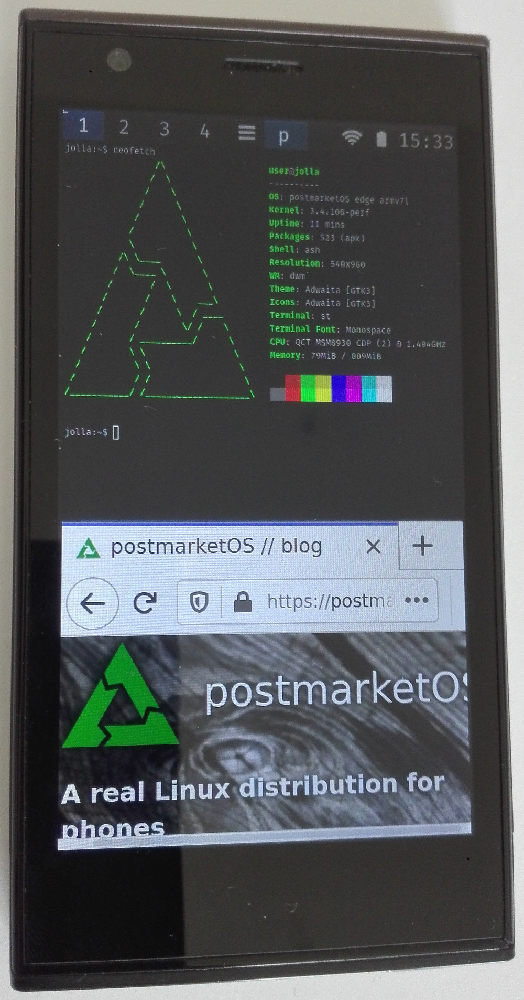
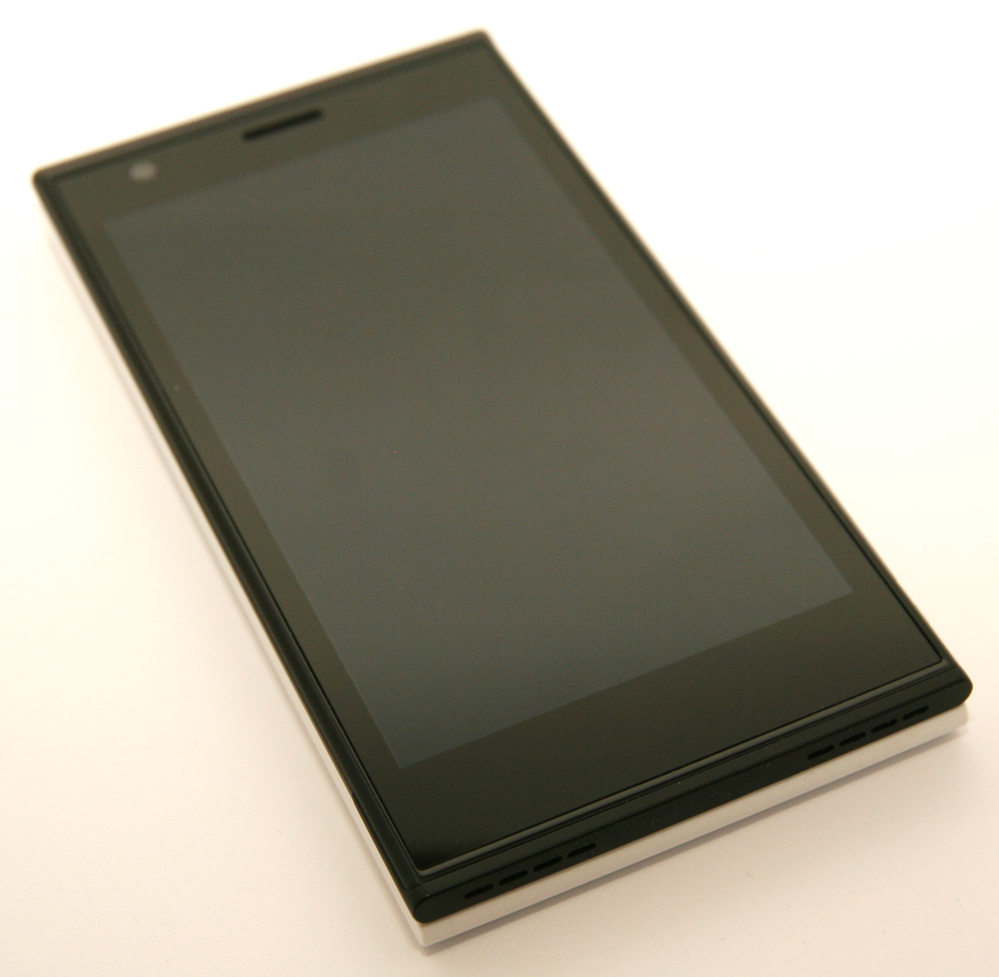

Jolla Phone (jolla-sbj)
|
 Jolla Phone | |
| Manufacturer | Jolla |
|---|---|
| Name | Jolla Phone |
| Codename | jolla-sbj |
| Released | 2013 |
| Category | testing |
| Original software | Sailfish 1 |
| Hardware | |
| Chipset | Qualcomm MSM8930 Snapdragon 400 |
| CPU | Dual-core 1.4 GHz Krait 300 |
| GPU | Adreno 305 |
| Display | 540x960 IPS |
| Storage | 16 GB |
| Memory | 1 GB |
| Architecture | armv7 |
| Non-Android based device | ✔ |
{kind=link}
| USB Networking |
Partial
|
|---|---|
| Flashing |
Partial
|
| Touchscreen |
Works
|
| Display |
Works
|
| WiFi |
Works
|
| FDE | |
| Mainline |
Broken
|
| Battery |
Works
|
| 3D Acceleration |
Broken
|
| Audio |
Works
|
| Bluetooth |
Broken
|
| Camera |
Broken
|
| GPS |
Broken
|
| Mobile data |
Broken
|
| SMS |
Broken
|
| Calls |
Broken
|
| USB OTG | |
| NFC | |
| Accelerometer |
Broken
|
|---|---|
| Magnetometer | |
| Ambient Light | |
| Proximity | |
| Hall Effect | |
| Ir TX | |
|---|---|
| TrustZone | |
Contents
Contributors
- MartijnBraam
- PureTryOut
- Postmarketeer
Backup the Jolla system
If you want to flash postmarketOS to your phone itself rather than an sdcard, it might be smart to first backup your system.
Backup:
- Shutdown the device and remove all cables and the battery
- Insert the battery while holding down the volume down button
- While still holding down the volume down button, press the power button till the phone shakes. If done correctly, the Jolla logo will be shown constantly in combination with the led lighting up white
- Plug in the phone to a PC with telnet installed
- On your PC, open a terminal and use telnet to get into the recovery
$ telnet 10.42.66.66
- A menu will be shown, press 4 and enter to get a shell. The device will ask for your devicelock code
- Insert a sdcard into your phone with a partition on it big enough to fit the system (make sure it isn't FAT32 formatted, as it can only store files up to 4GB big which might be too small). The sdcard will show up as "/dev/mmcblk1"
- Mount the sdcard partition to a directory.
# mkdir /tmp/phone-backup; mount /dev/mmcblk1p1 /tmp/phone-backup
- dd your system to an image file on the sdcard.
# dd if=/dev/mmcblk0p28 of=/tmp/phone-backup/jolla-fullBackup.img
- When the disk image is made, unmount the sdcard.
# umount /tmp/phone-backup
Restore:
- Telnet to the device like before
- Mount the sdcard to a partition again
- dd the backup image to the device
# dd if=/mnt/backup/jolla-fullBackup.img of=/dev/mmcblk0p28
- Reboot
Reverting back to stock w/o backup
To install latest stock version you need to flash an image, because the recovery image of factory reset is not updatable. A decent version can be found here.
Flashing mode
The Jolla phone uses fastboot from the Mer project rather than Android. To enter fastboot shut down the device, then Plug in USB lead while pressing Volume Down.
USB connection
The USB connection works, but needs some manual configuration (as found here).
First, find the interface name using ip a.
Then, we have to assign the device a mac address (replace the interface name with what you found from the previous command).
# ip l set enp1s0f0u3 address 12:12:12:12:12:12
After some seconds an IP address will be assigned automatically.
You can now use SSH to connect to the device on 172.16.42.1.
Install to SD-card only
Its possible to install to sdcard and boot via fastboot without flashing.
- Install to sdcard
# pmbootstrap install --sdcard=/dev/XXX
- Enter fastboot mode
- Boot via fastboot
# pmbootstrap flasher boot --cmdline "root=/dev/mmcblk1p2 androidboot.hardware=qcom user_debug=30 ehci-hcd.park=3 maxcpus=2 zram.num_devices=2"
If you see an error Booting FAILED (remote: 'access denied. need privilege!'), it means that the bootloader is locked. You need to unlock the bootloader by going in the recovery mode (https://talk.maemo.org/showthread.php?p=1556497 / https://jolla.zendesk.com/hc/en-us/articles/204709607-Jolla-Phone-How-to-use-Recovery-Mode):
1. Turn off your Jolla device and remove all cables and the battery.
2. Press and hold down the Volume Down button while re-inserting the battery.
3. While still holding down the Volume key, press the Power key until Jolla vibrates.
You can now release both buttons. You have now put your device into Recovery Mode.If you have a device lockcode, there could be an issue saying the code is incorrect even after typing the correct one (https://forum.sailfishos.org/t/jolla-recovery-v0-3-1-unlockable/8013/2) so you may need to disable the lockcode in Sailfish OS settings before unlocking the bootloader in recovery mode. If the bootloader is unlocked, it should display "Unlocked" in red on the top left when entering fastboot.
If your screen stays black after booting, it could mean that you have used an interface that is not supported: https://wiki.postmarketos.org/wiki/Category:Interface#Which_interfaces_work_where_.28and_which_interface_should_I_use.3F.29
You can reboot into fastboot again as root if reboot-mode is installed.
# (sleep 2 && reboot-mode bootloader ) & exit
CTRL+D
SIGILL in kernel log
Kernel log are flushed with these messages:
sshd(3029) send signal 4 to sshd(3029)
sshd (3029): undefined instruction: pc=4038c98c
Code: 4770 ec51 0f1e 4770 (ffb0) 0300This is due to probing of processor capabilities in libcrypt of OpenSSL.
Its reduced by changing debug level to user_debug=30.
This also blocks debugging with gdb. Workaround can be found here <https://www.openssl.org/docs/faq.html#PROG17>.
Devices
| Component | Model | Driver | Device | Info |
|---|---|---|---|---|
| Touchscreen | Synaptics S3202 | synaptics_s3202_touch | /devices/i2c-3/3-0020/input/input0
/devices/i2c-3/3-0020/input/input1 |
touch_synaptics
capkey_synaptics |
| Vibration motor | pm8038 | pm8xxx-vibrator | /devices/platform/msm_ssbi.0/pm8038-core/pm8xxx-vib/input/input2 | |
| Power Key | pmic8038 | pmic8xxx_pwrkey | /devices/platform/msm_ssbi.0/pm8038-core/pm8xxx-pwrkey/input/input3 | |
| The Other Half Smart Cover | toh-event | /devices/virtual/input/input4 | ||
| Audio | MSM Sitar | msm8930 | /devices/platform/soc-audio.0/sound/card0/input5
/devices/platform/soc-audio.0/sound/card0/input6 |
Button Jack
Headset Jack |
| Accelerometer | BMA255 | bma2x2 | /devices/virtual/input/input7 |
echo 1 > input7/enable
|
| Magnetometer | BMM050 | bmm050 | /devices/virtual/input/input8 | |
| Gyroscope | l3gd20 | l3gd20_gyr | /devices/i2c-12/12-006a/input/input9 | |
| Proximity | tsl2772 | tsl277x | /devices/virtual/input/input10 | |
| Ambient light | tsl2772 | tsl277x | /devices/virtual/input/input11/als_lux |
echo 1 > input11/als_can_wake
|
| GPIO keys | /devices/platform/gpio-keys/input/input12 | |||
| Backlight | /sys/class/leds/wled/brightness | |||
| LEDs | /sys/class/leds/red/brigtness
/sys/class/leds/green/brightness /sys/class/leds/blue/brightness |
Vendor Firmware
/dev/mmcblk0p25 on /persist type ext4
WCNSS_qcom_cfg.ini WCNSS_qcom_wlan_nv0.bin WCNSS_qcom_wlan_nv1.bin WCNSS_qcom_wlan_nv2.bin/dev/mmcblk0p18 on /firmware type vfat
modem.b00 modem.b03 modem.b06 modem.b09
modem.b01 modem.b04 modem.b07 modem.b10
modem.b02 modem.b05 modem.b08 modem.mdt
modem_fw.b00 modem_fw.b03 modem_fw.b09 modem_fw.b12 modem_fw.b16 modem_fw.b25 modem_fw.b31
modem_fw.b01 modem_fw.b04 modem_fw.b10 modem_fw.b13 modem_fw.b23 modem_fw.b27 modem_fw.fli
modem_fw.b02 modem_fw.b05 modem_fw.b11 modem_fw.b15 modem_fw.b24 modem_fw.b28 modem_fw.mdt
q6.b00 q6.b04 q6.mdt
q6.b01 q6.b05
q6.b03 q6.b06
tzapps.b00 tzapps.b03
tzapps.b01 tzapps.mdt
tzapps.b02
wcnss.b00 wcnss.b04
wcnss.b01 wcnss.b05
wcnss.b02 wcnss.mdtRPMs can't be downloaded directly, but exported from device with pkcon -vvv download . <pkg-name>.
# rpm2archive sbj-wlan-0.2.7-1.3.6.jolla.armv7hl.rpm && tar tzvf sbj-wlan-0.2.7-1.3.6.jolla.armv7hl.rpm.tgz | grep -o " ./.*wlan[\./].*"
./lib/modules/3.4.108.20200929.1/kernel/net/wireless/wlan.ko
./system/etc/firmware/wlan/prima/
./system/etc/firmware/wlan/prima/WCNSS_cfg.dat
./system/etc/firmware/wlan/prima/WCNSS_qcom_cfg.ini -> /persist/WCNSS_qcom_cfg.ini
./system/etc/firmware/wlan/prima/WCNSS_qcom_wlan_nv0.bin -> /persist/WCNSS_qcom_wlan_nv0.bin
./system/etc/firmware/wlan/prima/WCNSS_qcom_wlan_nv1.bin -> /persist/WCNSS_qcom_wlan_nv1.bin
./system/etc/firmware/wlan/prima/WCNSS_qcom_wlan_nv2.bin -> /persist/WCNSS_qcom_wlan_nv2.bin
# rpm2cpio ../kernel-adaptation-sbj-3.4.108.20200929.1-1.11.2.jolla.armv7hl.rpm | cpio -t | grep cfg
./lib/modules/3.4.108.20200929.1/kernel/net/wireless/cfg80211.ko
WiFi
WiFi works with firmware and the original proprietary wlan.ko, which depends on cfg80211.ko.
It must be activated in this order (these steps may not be necessary and could be ignored):
# echo 1 > /dev/wcnss_wlan 2>/dev/null
# sleep 1
# modprobe wlan
# echo sta > /sys/module/wlan/parameters/fwpath
You can use sudo nmtui to connect to a Wi-Fi network (nmcli can be used also: https://wiki.postmarketos.org/wiki/WiFi#Using_NetworkManager). You may see WiFi networks listed under 2 network interfaces, p2p0 and wlan0. The correct interface for WiFi is wlan0.
If you have problems to connect to a WiFi network with Network Manager (for example with a message "Error: Connection activation failed: (5) IP configuration could not be reserved (no available address, timeout, etc.)."), you can install dhclient (by adding it when running pmbootstrap init on your computer) and replace dhcp=internal with dhcp=dhclient below [main] in /etc/NetworkManager/NetworkManager.conf. Then you need to restart Network Manager with the command sudo service networkmanager restart (solution based on https://bbs.archlinux.org/viewtopic.php?id=232833 / https://forum.salixos.org/viewtopic.php?f=30&t=7284).
Network Manager should then be connected to the WiFi network. If you still don't have access to Internet because there is no default route, you need to execute this command: sudo dhclient wlan0.
Modem
Firmware loads, but modem can't be enabled. Might be fixable, because it works for similar samsung-i9195 (#1054). To get more features working like the modem, the phone must be ported first to the mainline kernel (https://gitlab.com/postmarketOS/pmbootstrap/-/commit/2e30fa4281b43df769bd2546931fd63ba9857b53#note_846861351).
# apk add ofono ofono-scripts
# service ofono start
# echo 2 > /sys/devices/virtual/smdpkt/smdcntl0/open_timeout
# /usr/lib/ofono/test/enable-modem
modem and modem_fw is loaded.
pil pil0: q6: Brought out of reset
apr_tal:Q6 Is Up
diag: proc 2, msg mask update fail -12, tried 419
pil pil1: modem_fw: Brought out of reset
pil pil2: modem: Brought out of reset
Notify: smsm init
smd_pkt_open: wait on smd_pkt_dev id:0 allocation failed rc:-110Photos
|
{kind=link}